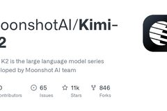
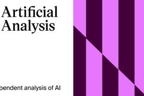

τ-bench
evaluating conversational agents, from text to voice

taubench.com · arXiv 2406.12045 · 2506.07982 · 2603.13686 · 2603.04370
Overview & contents
One benchmark family for customer-service agents, built on one idea: grounded tasks whose reward is a verifiable database diff. The talk traces how realism was added one axis at a time — dual control, knowledge, then full-duplex voice — and what each axis revealed that the previous one couldn’t see.
Sierra, in one slide
“Better customer experiences. Built on Sierra.”
Sierra is an AI agent platform: enterprises build, deploy, and continuously improve customer-facing agents across chat, email, SMS, WhatsApp — and, increasingly, voice.
Customer service AI is big right now
Gartner counts 17 million human contact-center agents worldwide — and predicts agentic AI will autonomously resolve 80% of common issues by 2029.
 Intercom Fin
Intercom Fin Agentforce
AgentforceWhy customer service, though? Because it’s primed for AI disruption — like coding agents, once you get all the information in one place, the rest is tractable:
Gartner, March 2025 prediction & contact-center workforce estimate.
The τ-bench family
One grounded-task substrate, realism added one axis at a time:
Yao, Shinn, Razavi & Narasimhan
Barres, Dong, Ray, Si & Narasimhan


Shi, Zytek, Razavi, Narasimhan & Barres
Ray, Dhandhania, Barres & Narasimhan
Each axis was a failure mode we kept meeting in production — and each found a capability cliff the previous one couldn’t see.
Tool · Agent · User
The first benchmark of tool-using agents on task completion in conversation: not “did it call the right API?” but “did it finish a person’s task — under policy, over many turns?”
The agent answers for the organization, not the user. Retail ~115 tasks · airline ~50. Yao, Shinn, Razavi & Narasimhan, 2024 — arXiv 2406.12045.
A task is a world plus a goal
Basic economy cannot be modified.
Within 24 h of booking, the agent may cancel and rebook.
reservation JK9O19
basic_economy · booked < 24 h ago · confirmed
“You were going to fly to Mexico next week, but now want the 22nd. You want the cheapest option that flies that day.”
The conversation can take any route — the reward only reads the world it leaves behind. Deterministic r ∈ {0,1}, no judge, environment resets per trial.
But the user can only talk
τ² answers all three at once: give the user a world.
Give the user a world
nothing to act on
So τ² gives the user a world: its own tools and device, coupled to the agent’s — dual control over shared state (formally, a Dec-POMDP).
More realistic — and, in the paper, more reliable at once. Retail & airline stay as single-control baselines, backward-compatible with τ-bench.
Barres, Dong, Ray, Si & Narasimhan — arXiv 2506.07982 · ICML 2026 Oral
An example call: “No Service”, abroad
crm.line.roaming == true
The fix took both hands — the agent writes in the CRM, the user toggles the phone. Neither side can finish alone.
The compositional task generator
Tasks aren’t written — they’re initialized. Start from a healthy world and break it, composing independent root causes on either side:
1 world = healthy_telecom()
2 world.apply(RC₁, RC₂) ← same tools the user has
3 symptom emerges: “No Service”
4 gold_fix = the undo plan — recorded at build time
RC₂ is cross-world: “abroad” lives on the phone, “roaming off” in the CRM — only together do they break service. We injected the causes, so the fix provably exists.
Every added cause adds steps: difficulty is a dial.
The bottleneck is coordination, not reasoning
Long-horizon coordination was the wall — keep that in mind for what happens next.
Then the labs started reporting on it





OpenAI · Anthropic · Google · xAI · Moonshot · DeepSeek · Qwen · NVIDIA — 1.5k★ on GitHub. Artificial Analysis runs τ² independently across its model index — third-party numbers, not self-reported.
…and then they saturated it
The outcome: agents that are genuinely good at long-horizon tasks.
τ²-telecom pass@1 by model release date, from the taubench.com leaderboard. Dashed line tracks the running frontier: 49% → 99.3% in ~16 months.
Saturated is not solved
At 99.3%, telecom can no longer tell models apart — yet nobody running production agents thinks the problem is done. τ² still hands the agent two things for free:
One curated policy.md in the prompt — real orgs bury procedures across hundreds of documents.
→ τ-knowledge
Turns arrive whole, one at a time — production support is a phone call.
→ τ-voice
Same substrate, same deterministic reward — two new axes of realism.
Two new axes of realism: knowledge & voice
Same grounded-task substrate — verifiable DB footprints, pass^k — extended to where production agents actually struggle: finding the policy before acting on it, and doing all of this over a phone line.
Find the policy, then act on it
Not provided up front. The procedure is buried in the knowledge base — finding it is the task.
698 documents · 21 product categories · ~195K tokens
51 tools are defined inside the documents
accounts · cards · transactions
“My wallet was stolen — can you freeze my cards?”
Same deterministic reward — but a typical task needs 18.6 documents and 9.5 tool calls. Shi, Zytek, Razavi, Narasimhan & Barres — arXiv 2603.04370.
The frontier has shifted
The classic domains are saturating — banking is wide open. Even with the gold documents handed over, the best model reaches 39.7: retrieval helps, but grounded reasoning is the bottleneck.
pass^1, taubench.com + internal runs, June 2026 · retrieval strategy is pluggable — 12 configs from BM25 → embeddings → agentic terminal.
What separates the strongest agents
A: continues without searching again
A: kb_search("medical emergency transfer escalation")
kb_search("human agent")
kb_search("escalation policy")
A: orders a replacement card
A: files a fraud dispute without being asked
A: orders a replacement card. That’s it.
From qualitative analysis across thousands of trajectories — the gap is judgment about when, not capability at how.
So far
Grounded tasks, full-duplex, over a realistic phone line
Voice is becoming a primary interface for agentic systems.
Ray, Dhandhania, Barres & Narasimhan — arXiv 2603.13686 · ICML 2026
The call you design for vs. the call you get
How do you build a representative user simulator?
You’d want the user to:
But no voice model today is strong enough to play this caller at human-level latency — you have to choose: a high-quality, controllable user sim, or a low-latency one.
Wait — what if you could pause time?
Introducing ‘ticks’
The tick log — audio, transcript slice, tool calls, per tick — is the single source of truth every downstream metric is computed from.
Interrupts & backchannels, tick by tick
User-simulator defaults: respond after 1 s of agent silence · yield after 1 s when interrupted · hold 5 s when interrupting. All knobs — and deterministic given a seed.
Every caller has an accent
Two control personas set the clean American-accented baseline; five regular personas carry the accents we actually hear on real support lines:
 Matt Delaneycalm Midwest — the “ideal” caller
Matt Delaneycalm Midwest — the “ideal” caller
 Lisa Brennerstandard American, brisk
Lisa Brennerstandard American, brisk
 Arjun RoyBengali (Dhaka)
Arjun RoyBengali (Dhaka)
 Wei LinSichuan Mandarin
Wei LinSichuan Mandarin
 Mamadou DialloSenegalese French
Priya PatilMarathi-influenced Indian English
Mamadou DialloSenegalese French
Priya PatilMarathi-influenced Indian English
Personas are generated reproducibly (fixed seed) via voice design — accents are TTS-induced, a stated scope limitation.
…loosely inspired by friends on the Sierra research team!
Ben Shias Matt Delaney
Ola Zytekas Lisa Brenner
Keshav Dhandhaniaas Arjun Roy
Siyu Yaoas Wei Lin
Victor Barresas Mamadou Diallo
Soham Rayas Priya Patil
The audio pipeline
Figure 3, τ-voice (arXiv 2603.13686) — redrawn live. A factorial ablation grid (audio × accents × behavior) isolates each factor’s cost.
Every run is auditable — audio included
Live embed of the taubench.com visualizer — pick any task, scrub the timeline, and play the stereo call audio with effects and tool calls overlaid. (Needs internet; opens in a new tab if the embed is blocked.)
Going voice once cost half your text performance — the frontier is catching up
Overall pass@1 (retail/airline/telecom average), realistic audio — taubench.com voice leaderboard, July 2026.
Interactivity metrics
Task reward says nothing about how it felt to talk to the agent. From the tick logs we score four dimensions of conversational competence:
| Dimension | What it captures |
|---|---|
| Responsiveness | Does the agent answer each user turn — and stop within 2 s when barged-in? |
| Latency | Time from end-of-user-speech to agent speech; time to go quiet after an interruption. |
| Interruption | How often the agent speaks before the user finishes — can exceed 100% per turn. |
| Selectivity | Correctly ignoring “mm-hmm”, coughs, and speech aimed at someone else in the room. |
No model wins every dimension
| pass@1 | Latency ↓ | Responsiveness ↑ | Interrupt ↓ | Selectivity ↑ | |
|---|---|---|---|---|---|
| grok-voice-think-fast-1.0 | 67.3 | 1.29 s | 96.9 | 19.7 | 51.5 |
| gpt-realtime-2 | 51.2 | 1.28 s | 98.4 | 21.0 | 10.9 |
| gemini-3.1-flash-live (think-high) | 43.8 | 2.01 s | 67.3 | 18.9 | 66.3 |
| grok-voice-fast-1.0 | 38.3 | 1.15 s | 83.3 | 84.3 | 57.5 |
| cascaded pipeline (baseline) | 31.2 | 2.56 s | 89.0 | 64.4 | 57.8 |
| gemini-live-2.5-flash | 25.8 | 1.15 s | 68.5 | 20.6 | 54.5 |
taubench.com leaderboard, averaged over retail / airline / telecom (realistic audio). Aggregated as in the paper: responsiveness = mean(RR, RY) · latency = mean(LR, LY) · selectivity = mean(SBC, SVT, SND). green = best in column · red = worst
Where the failures come from
Authentication is the dominant bottleneck. Agents fail to transcribe names and emails even when the caller spells them letter-by-letter — and that blocks every downstream action.
Which ingredient of “realistic” hurts?
On retail, we add each factor to an otherwise clean condition, one at a time:
| Retail pass@1 | OpenAI | xAI | Average | |
|---|---|---|---|---|
| Clean | 45 | 71 | 48 | 55 |
| + Noise | 40 −4 | 67 −4 | 46 −2 | 51 −4 |
| + Accents | 44 −1 | 60 −11 | 30 −18 | 44 −10 |
| + Turn-taking | 33 −11 | 57 −14 | 52 +4 | 47 −7 |
| Realistic (all) | 30 −15 | 45 −26 | 39 −10 | 38 −17 |
τ-voice paper, Table 4 (Feb 2026) — retail pass@1, each factor added alone over clean. Accents are TTS-induced, so treat absolute numbers as indicative; the per-provider variance is the signal.
The voice labs are optimizing against it



Hopefully voice experiences are gonna get better soon!
Also cited in OpenAI’s “Introducing GPT-Live” (July 2026) — the first full-duplex model generation trained with benchmarks like this in the loop.
Multilingual: τ-voice for the other 80%
In multilingual, user experience matters: other languages carry nuances — grammatical gender, honorifics, register — that aren’t accounted for today.
Language is not translation
Thoughts on benchmarking
Distill production problems. LLMs will draft the tasks, worlds, even judges — the scarce input is taste: what’s worth measuring. Every τ axis is a production failure mode, distilled. And a benchmark is a steering wheel: we aim the labs at problems we know are tractable.
Reliability is half of quality. τ²’s accidental lesson: don’t prompt for a reliable simulator, provide a world. Grounding the user in real state cut critical simulator errors ~13% → 6% — realism made the measurement cleaner.
Verifiability is the other half. The core reward is a database diff — no judge can argue with it. Rubric rewards (delivery, intonation, nativeness) now see what state diffs can’t — but every rubric point is a point you can’t verify. How do you walk this tradeoff?
Yao, “The Second Half” (ysymyth.github.io, Apr 2025) · Narayanan, ICML 2026 keynote (Jul 13, 2026 — AI Snake Oil / normaltech.ai).
If you remember four things
One grounded, deterministic task substrate — with realism added one axis at a time: dual control, then knowledge, then full-duplex voice, next language. Each axis found a capability cliff the previous one couldn’t see.
Appendix
pass@k asks “can it?” — pass^k asks “will it always?”
At least one of k trials succeeds. The number everyone reports — it only goes up with k.
A customer gets one call — and the org gets a million of them. Production runs on pass^k.
GPT-4o on τ-retail, from the τ-bench paper: it “solves” 62% of tasks — but repeats only a quarter of them reliably 8 for 8. c = successful trials, n = total trials.
How the field evaluates conversational agents
Two parallel threads: task-grounded evaluation and conversational-dynamics evaluation. The Full-Duplex-Bench line traces the second:
The two threads don’t meet: dynamics benchmarks have no verifiable task, task benchmarks have no live audio. τ-voice is built to sit at that intersection.
No benchmark measures all three
| task completion | full- duplex | realistic audio env. | |
|---|---|---|---|
| task-oriented dialogue · text | |||
| τ-bench | ✓ | — | — |
| τ²-bench | ✓ | — | — |
| conversational dynamics | |||
| Full-Duplex-Bench | — | ✓ | — |
| Full-Duplex-Bench-V2 | ∼ | ✓ | — |
| Talking Turns | — | ✓ | — |
| speech understanding | |||
| VoiceBench | — | — | ✓ |
| VocalBench | — | — | ✓ |
| Audio MultiChallenge | — | — | ✓ |
| VoiceAgentBench | ∼ | — | — |
| τ-voice | ✓ | ✓ | ✓ |
Task completion — correct API calls with verifiable database state changes.
Full-duplex — simultaneous bidirectional speech, turn-taking, interruptions.
Realistic audio environment — accents, background noise, channel degradation, disfluencies.
Prior work advances individual dimensions; τ-voice requires all three at once — with native tool calling inside the speech pipeline as the gating capability.
Table 1, τ-voice (arXiv 2603.13686) · ∼ = partial coverage.
Turn-taking is a controlled policy
A separate LLM policy runs on the user side during agent speech, deciding what a real caller would do with their voice right now:
The turn-taking policy is evaluated every 2 s during agent speech; interrupt tendency, patience, and backchannel density are per-persona parameters.
The frontier is moving — fast
Realistic-audio pass@1 (avg. of retail/airline/telecom), taubench.com leaderboard. Frontier: 30% (gpt-realtime-1.0, Aug ’25) → 67% (grok-voice-think-fast, Apr ’26) — a +29 pt jump in ~2 months; voice now retains ~79% of text capability, up from ~45%.
Human raters find the simulated caller realistic
Two annotators independently rated 60 simulations — stratified across domains and speech-complexity conditions — on a 1–4 scale, where 4 = indistinguishable from a real caller.
| Dimension | Mean rating |
|---|---|
| Backchannel naturalness | 3.5 / 4 |
| Audio environment realism | 3.3 / 4 |
| Turn-taking naturalness | 3.1 / 4 |
| Behavioral plausibility (holistic) | 3.1 / 4 |
| Interruption behavior | 3.0 / 4 |
| Voice prosody | 2.6 / 4 |
Not a substitute for a study with real human callers (future work) — it checks that the dimensions that most affect task completion (turn-taking, interruptions, backchannels, plausibility) are acceptably realistic.
The voice–text gap survives significance testing
2 independent runs per condition (airline n=50, retail & telecom n=114 each); paired permutation tests on per-task success — paired by task ID, 100k permutations, Holm-Bonferroni corrected.
| Comparison · pooled across domains | Δ pass@1 range* | p (adj) |
|---|---|---|
| GPT-5 text → Clean voice | −33 to −55 pp | all < 0.001 |
| GPT-5 text → Realistic voice | −49 to −61 pp | all < 0.001 |
| GPT-4.1 text → Realistic voice | −20 to −32 pp | all < 0.001 |
| Clean → Realistic | −6 to −16 pp | all ≤ 0.002 |
*Range across the three voice models (gemini-live-2.5, gpt-realtime-1.5, grok-voice); rates pooled over both runs.
Failures are agent errors, not simulator artifacts
First critical error per simulation, typed as: logical, transcription, hallucination, VAD/unresponsive, timeout, or early termination.